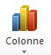

Le RMS Titanic
Le RMS Titanic est un paquebot transatlantique britannique qui fait naufrage dans l’océan Atlantique Nord en 1912 à la suite d’une collision avec un iceberg, lors de son voyage inaugural de Southampton à New York. C’est l’une des plus grandes catastrophes maritimes survenues en temps de paix et la plus grande pour l’époque.

Ce paquebot de la White Star Line, construit à l’initiative de Joseph Bruce Ismay en 1907, a été conçu par les architectes Alexander Montgomery Carlisle et Thomas Andrews des chantiers navals Harland & Wolff. Sa construction débute en 1909 à Belfast et se termine en 1912. C’est à l’époque le plus luxueux et le plus grand paquebot jamais construit. Le Titanic est dirigé par le Capitaine Edward Smith, qui a également sombré avec le navire. Le paquebot portait certains des gens les plus riches de l’époque, de même que des centaines d’émigrants de Grande-Bretagne et d’Irlande et d’ailleurs en Europe qui cherchaient une nouvelle vie aux États-Unis.
Le 14 avril 1912, quatre jours après le commencement de son voyage inaugural, il heurte un iceberg à 23 h 40 (heure locale) et coule le 15 avril 1912 à 2 h 20 au large de Terre-Neuve. Le drame met en évidence l’insuffisance des règles de sécurité de l’époque, notamment le nombre insuffisant de canots de sauvetage et les carences dans les procédures d’évacuation d’urgence.
L’épave du Titanic est localisée le 1er septembre 1985 par le professeur Robert Ballard. Elle gît à 3 843 mètres de profondeur à 650 km au sud-est de Terre-Neuve. L’histoire du paquebot a marqué les mémoires, et suscité la publication de nombreux ouvrages (historiques ou de fiction) et la réalisation de longs métrages dont le film du même nom Titanic de James Cameron, sorti en 1997 et ayant entraîné un important regain d’intérêt pour le paquebot et son histoire.
Source : https://fr.wikipedia.org/wiki/Titanic
Informations sur le fichier passagers
Ce sont les métadonnées du fichier.
Les métadonnées (littéralement des données décrivant d'autres données) d'un fichier, ou données EXIF (EXchangeable Image file Format) contiennent des informations sur ce fichier, par exemple le nom de son auteur et la date à laquelle il a été enregistrée, ou les coordonnées GPS du lieu où a été prise une photo, etc.
[1] Source : https://public.opendatasoft.com/explore/dataset/titanic-passengers/ , le séparateur décimal a été remplacé par des virgules (format français).
Quel caractère sépare les données les unes des autres ?
La première ligne contient les descripteurs des données. Quels sont-ils ?
A votre avis, que contiennent les autres lignes ?
On peut stocker des données dans un fichier csv (pour Comma Separated Values) :
- c'est un format de fichier texte, ouvert qui peut être créé, lu et modifié par tous les logiciels,
- les données sont séparées par des virgules, des points virgules, ou encore des tabulations, « | », etc.
- la première ligne contient (souvent) des informations qui caractérisent les données : les descripteurs,
- chaque ligne suivante contient les données sur un objet ou une personne.
Importer les données dans un tableur
La suite cette activité se fait sur tableur. Vous pouvez choisir Calc ou Excel au choix.
Un tableur est un logiciel capable de manipuler des feuilles de calcul avec de nombreuses possibilités : faire des recherches sur des données, des calculs, analyses statistiques, présenter des données sous formes graphique, etc.
De nombreux tableurs existent, parmi mes plus connus on trouve :
- Calc est le tableur de la suite bureautique LibreOffice (anciennement OpenOffice) est un logiciel libre et gratuit ;
- Excel est le tableur de la suite bureautique Office de Microsoft est un logiciel propriétaire et payant.
Un logiciel propriétaire, par opposition à un logiciel libre ne permet pas l'étude ou la modification de son code source ni la distribution de copies. La plupart des logiciels propriétaires sont payants et la plupart des logiciels libres sont gratuits, mais ce n'est pas toujours le cas.
Par défaut, Calc utilise des fichiers enregistrés au format .ODS, alors qu'Excel utilise le format .XLS. XLS est un format fermé, propres à Microsoft alors qu’ODS est un format ouvert, mais les deux tableurs peuvent lire les deux formats.
Pour importer les données depuis un fichier csv dans le tableur on utilise un formulaire de mise en forme permettant de paramétrer le séparateur de données, ici le point-virgule, afin d'obtenir un aperçu lisible et organisé des données.
Avec Calc, une fenêtre d'import de fichier csv s'ouvre. Choisir le séparateur point-virgule seulement et cliquer OK.
Avec Excel, le fichier s'ouvre automatiquement avec les données correctement séparées.
Note : Si ce n'est pas le cas, il faut l'importer en utilisant dans le menu Données. Une première fenêtre s'ouvre, choisir « Délimité » dans l’Étape 1.
puis cliquer sur Suivant et choisir le point-virgule dans l’Étape 2 et Standard en Étape 3 et enfin mettre les données en =$A$1.
Recherches et tris sur les données
Le fichier est maintenant ouvert dans le tableur. On observe un collection de données structurées présentées sous forme d'une table.
Une donnée est une valeur décrivant un objet ou une personne. Le descripteur est une information qui caractérise une donnée.
Des données ayant les mêmes descripteurs forment une collection de données, qui peut être représentée dans une table.
On peut lire dans la première ligne les descripteurs de chaque colonne :
- PassengerId : un numéro identifiant le passager
- Survived : le passager a survecu ou non au naufrage
- Pclass : la classes selon le prix du billet et la qualité de service
- Name, Sex : Age : le nom, le sexe et l'age du passager
- SibSp : nombre de frères et sœurs (Siblings) et époux/épouse (Spouse) à bord
- Parch : nombre de parents et enfants (children) à bord
- Ticket, Fare, Cabin : le numéro de ticket, le prix payé (fare) en £ ( et le numéro de cabine du passager
- Embarked : le port d'embarquement du passager, Southampton, Cherbourg ou Queentown
et dans chacune des lignes suivantes les données concernant chaque passager. Certaines données peuvent être manquantes mais cela n’empêche pas de traiter le reste.
Quel age avait-il ? Ou avait-t-il embarqué ? A-t -il survécu ? ?
Quels sont les passagers qui ont payé ce prix-là ?
Calculs avec formules simples sur les données
Le tableur permet de faire des calculs sur les données numériques en utilisant des formules.
 La saisie d'une formule se fait en sélectionnant une cellule puis en utilisant la barre de formules. Pour entrer une formule
il suffit de commencer la saisie par le signe d'égalité (=) puis d'entrer les références des cellules à utiliser et éventuellement
des opérateurs et/ou fonctions.
La saisie d'une formule se fait en sélectionnant une cellule puis en utilisant la barre de formules. Pour entrer une formule
il suffit de commencer la saisie par le signe d'égalité (=) puis d'entrer les références des cellules à utiliser et éventuellement
des opérateurs et/ou fonctions.
On voudrait calculer le nombre de membres de la famille de chaque passager, c'est-à-dire le total de son nombre de frères et sœurs et époux/épouse (descripteur SibSp) et de son nombre de parents et enfants à bord (descripteur Parch).
Quelle formule faut-il ajouter en cellule M2 pour calculer le nombre de membres de la famille du premier passager de la table ?
Quel est le nom de la plus grande famille embarquée sur le Titanic et combien étaient-ils sur ce bateau ?
Quel était le numéro de ticket des membres de cette famille ?
On constate que le fichier ne contient pas les noms de tous les membres de cette famille embarqués sur le Titanic, car il n’est pas complet. Combien manque-t-il de personnes dans cette collection ?
Ont-ils tous survécus ?
Calculs en utilisant des fonctions
Les tableurs disposent d'un certain nombre de fonctions avancées pour faire des calculs plus complexes. Pour opérer sur de grandes quantités de données, les fonctions de calcul (somme, moyenne, maximum…) s’appliquent sur des plages de cellules. Par exemple :
On appelle plage de cellules (ou range en anglais), un rectangle de cellules contiguës, délimité par la cellule en haut à gauche et celle en bas à droite. On note habituellement une plage par les références aux 2 coins séparés par le symbole « : ».
- NB() : compter le nombres de cellules indiquées
- SOMME() : la somme des cellules indiquées
- MOYENNE() : la moyenne des cellules indiquées
Après avoir sélectionné la cellule où écrire une formule, on peut écrire le nom d'une fonction directement si on la connaît, ou cliquer sur le bouton dans la barre de formules.
Écrire en cellule O2 le texte « Nombre de passagers » et en cellule P2 la formule
= NB(A2:A892)
et vérifier qu'on obtient bien le nombre total de passagers trouvé à la question 5
= MOYENNE(F2:F892)
Quel est l'âge moyen obtenu (modifier l'affichage pour arrondir le résultat à deux décimales) ?
De le même façon, écrire en cellule O4 « Prix Moyen ». Quelle formule faut-il écrire en cellule P4 pour obtenir le prix moyen (descripteur Fare) payé par les passagers ?
Quel était le prix moyen calculé ?
Pour avoir des analyses plus détaillées, on utiliser des fonctions qui réalisent des opérations avec certains critères. Par exemple, NB. SI() compte les cellules remplissant des critères spécifiés.
Écrire en cellule O11, O12 et O13 les textes « 1ere classe », « 2nde classe » et « 3ieme classe ».
Écrire en cellule P11 la formule suivante qui calcule le nombre de passagers en 1ere classe :
=NB.SI(C2:C892 ; "=1")
… puis copier et coller la formule dans les deux cellules du dessous. P12 et P12.
Observer les plages de cellules dans les formules qui ont été copiées. Pourquoi ne sont-elles pas correctes ?
Pour ne pas changer les références à des cellules ou plages de cellule dans une formule quand on la copie ou la déplace, il faut utiliser des références fixes indiquées avec le signe $.
Ici il faut donc modifier la formule saisie en P11 avec des références fixes :
=NB.SI($C$2:$C$892 ; "=1")
et la copier dans les deux cellules du dessous. Cette fois la plage de cellule dans la formule n'a pas changé.
puis ajouter en cellules O14 « Total » et P14 la formule =SOMME(P11:P13) pour vérifier que la somme des passagers par classe est correcte.
Représenter les données
Un histogramme est la représentation graphique de données par des barres horizontales ou verticales.
Les tableurs offrent de multiples possibilités pour visualiser des données de façon graphique..
Sélectionner la plage de cellules allant de O11 à P13 puis
- Si vous utilisez Calc, sélectionner le menu Insertion/Diagramme puis choisir Colonnes Empilées .
- Si vous utilisez Excel, cliquer sur l'icône . dans le menu Insérer puis choisir « Histogramme empilé ».
Dessiner le résultat obtenu.
Sélectionner la plage de cellules allant de O17 à P19 puis
- Si vous utilisez Calc, sélectionner le menu Insertion/Diagramme puis choisir Secteur .
- Si vous utilisez Excel, cliquer sur l'icône . dans le menu Insérer
Dessiner le résultat obtenu.
Les femmes et les enfants d’abord
On a coutume de dire « les femmes et les enfants d’abord » et on voudrait savoir si c'était le cas sur le Titanic.

Pour calculer le nombre de femmes qui ont survécu en P23, il faut compter les passagers qui remplissent deux conditions à la fois : etre une femme et avoir survécu !
La fonction NB.SI() ne suffit plus, il faut utiliser à la place par la fonction NB.SI.ENS() qui applique plusieurs critères aux cellules de plusieurs plages et compte le nombre de fois où tous les critères sont remplis en même temps. Ici on veut donc compter les cellules qui remplissent deux critères :
- Les valeurs de « Survived » qui se trouvent en $B$2:$B$892 sont "Yes" ; et en même temps
- Les valeurs de « Sex » en E$2:$E$892 sont "female".
=NB.SI.ENS(
...puis sans appuyer sur la touche Entrées, cliquer sur l’icône pour remplir les paramètres en utilisant l'aide fournie afin de répondre aux questions suivantes.

Remplir les cellules O26 à R28 avec les formules permettant de calculer chaque donnée et compléter ci-dessous avec les résultats obtenus.
Puis afficher les résultats trouvés dans un histogramme comme précédemment.